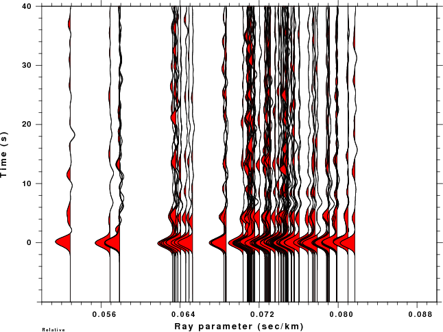

This section will describe the use of Computer Programs in Seismology
to create teleseismic P-wave receiver functions from digital data.
To perform the analysis we will require the following programs from the
Computer Programs in Seismology: gsac,
saciterd, saclhdr, and udtdd.
For the purpose of this example, I will assume that the original data
is received as a SEED file which will be read using the program rdseed to create traces in the SAC
binary trace format. It is not necessary to start with a SEED file, but
to determine the receiver function, you must have files in the SAC
trace format. For this example, we will consider the recording at
station ULN from the 20060510024256 Fox Island, Aleutians
earthquake. I went to the IRIS WILBUR II site http://www.iris.edu/cgi-bin/wilberII_page1.pl
to select the waveform. I also note the event information given
at the WILBUR II page:
Event: 2006/05/10 02:42:56.3 FOX ISLANDS,
ALEUTIAN ISLANDS
Mag: 6.3
Type: MO
Lat: 52.71
Lon: -169.24
Depth: 56.50
I
create the directory 20060510024256
and place the scripts IDOEVT, IDOROT, and DORFTN in
that directory. I also place the SEED file 20060510.seed in that
directory.
For testing everything is in the tarball rftn.tgz
. Unpack this with the command gunzip -c rftn.tgz | tar xvf -
I now edit the IDOEVT script
to place in the event location. The purpose of the IDOEVT script is to place the event
source parameters into the SAC header and to deconvolve the instrument
response to ground velocity in units of m/sec. Deconvolution is optional for
receiver function studies if the 3-components have the same instrument
response. For more information on the IDOEVT script click on Annotated IDOEVT
So in 20060510024256 do the following:
mkdir Sac
cd Sac
rdseed -f ../20060510.seed -R -d -o 1
../IDOEVT
Go to the GOOD directory
cd ../GOOD
Use gsac to review the traces so that you can exclude traces that have
problems
rbh> gsac GSAC> r *sac GSAC> sort up dist GSAC> p perplot 3 GSAC> quit rbh>
Now rotate the traces to a great circle path.
This script looks at traces ending with BHZ.sac or LHZ.sac. It then
uses saclhdr internally to get the station name,
using that to get all three components, which are then rotated to form
the Vertical, Radial and Transverse Components.
These are placed in the newly created parallel directory called ../FINAL
Go to the ../FINAL directory. For this example you will see the
following files: ULNBHR ULNBHT ULNBHZ.
Because of the way that gsac rotates
traces, it is not necessary to synchronize and cut prior
to rotation as is required by sac2000.
This is because gsac rotates
in absolute time and outputs only the common time window. In addition gsac can automatically rename the
output file names based on the station name in the header that the
first two characters of the component name. this is one reason for the
use of the ULNBHZ.sac notation for the deconvolved trace.
Note that if you wish to use the raw traces since the instrument
responses for the three components are matched, then you must modify
the IDOROT script to key on
the BHZ.S and BH*.S instead of the BHZ.sac and BH*.sac.
The steps to be take here are to select the P-wave, and then to cut the
trace around the P-wave arrival, to decimate to speed up a subsequent
direct inversion, and to finally do the deconvolution.
This is all handled by the script DORFTN.
So,
cd ..
DORFTN
This script is highly commented. You only have to interactively
pick the P arrival, using the x-x sequence to position the window, P
to pick and q to quit, you do not have to be very precise
To see the receiver functions, you can use gsac:
rbh> cd RFTN
rbh> gsac
GSAC> r *
GSAC> fileid name
GSAC> p
GSAC> q
rbh>
To get the image below I actually used the following commands:
rbh> cd RFTN
rbh> gsac
GSAC> r *
GSAC> fileid name
GSAC> bg plt
GSAC> p
Hold is OFF
XLIM is turned off
Initializing P001.PLT
GSAC> plotnps -F7 -W10 -EPS -K < P001.PLT > P001.eps
GSAC> convert -trim P001.eps P001.png
GSAC> q
rbh>
The Computer Programs in Seismology command plotnps converts CALPLOT graphics
to Encapsulated PostScript. On my LINUX or CYGWIN system, I have the
ImageMagick conversion routine, convert,
which converts the EPS to PNG for display on the web or
including in Word or PowerPoint. The plot of the receiver functions
obtained here
are
Once the receiver functions have been computed, they should be placed
in directories organized by the station. For example, I have the
following in the directory named KWJ:
R.KWJBHZ20020590148.2.5 R.KWJBHZ20031411853.1.0 R.KWJBHZ20052810350.1.0
R.KWJBHZ20020621207.1.0 R.KWJBHZ20031411853.2.5 R.KWJBHZ20052810350.2.5
R.KWJBHZ20020621207.2.5 R.KWJBHZ20031461923.1.0 R.KWJBHZ20053091040.1.0
R.KWJBHZ20020621213.1.0 R.KWJBHZ20031461923.2.5 R.KWJBHZ20053091040.2.5
R.KWJBHZ20020621213.2.5 R.KWJBHZ20031462314.1.0 R.KWJBHZ20053241244.1.0
R.KWJBHZ20020642114.1.0 R.KWJBHZ20031462314.2.5 R.KWJBHZ20053241244.2.5
R.KWJBHZ20020642114.2.5 R.KWJBHZ20031741214.1.0 R.KWJBHZ20053261503.1.0
The PlotRecordSection (prs) command of gsac can plot these receiver
functions in a way to assist their interpretation. Typically this is
done in two ways - a plot versus ray parameter and a plot as a function
of back azimuth. The back azimuth plot is useful for identifying
departure from a two dimensional model. For these plot to work,
the receiver functions must be computed to have exactly the same number
of seconds before the first bump.
rbh> gsac
GSAC> r KWJ/R*.1.0
GSAC> sort up baz
GSAC> bg plt
GSAC> prs baz relative tl -10 40 amp 0.3 vl -20 380 shd pos color 2
Hold is OFF
Initializing PRS001.PLT
GSAC> plotnps -F7 -W10 -EPS -K < PRS001.PLT > prs001.eps
GSAC> echo user4 is the ray parameter set by saciterd
GSAC> sort up user4
GSAC> echo plot traces as a function of ray parameter from 0.05 to 0.09 s/km
GSAC> prs user4 relative vl 0.05 0.09 title "Ray parameter (sec/km)" shd pos color 2 tl -10 40
Hold is OFF
Initializing PRS002.PLT
GSAC> plotnps -F7 -W10 -EPS -K < PRS002.PLT > prs002.eps
GSAC> quit
rbh>
These instructions create a CALPLOT file, e.g., PRS001.PLT, which is
converted to Encapsulated PostScript using the program plotnps. I then used the ImageMagick
conversion program convert to create the PNG graphic
for this web page.
The reason that I applied the sort command was that I wanted the
shading to overlay is an appealing fashion from left to right.
There are other prs options
that control the plotting. The relative
option must be used because the receiver functions do not have
correct time stamp. By definition the receiver function is a filter.
However having the year and day helps identify the earthquake providing
the data. The relative flag says to plot relative to the
beginning of the trace. Since we can plot traces organized by
many of the SAC header values, e.g., EVDP, USER4, AZ, DIST, BAZ, etc.,
the VL is used to denote the limits of the Variable used. In the
first case, the VL refers to back azimuth (the use of vl -20 380 instead of vl 0 360 is to avoid trace
clipping is there are observations at the extremes). In the second case
VL indicates ray parameters.
Here are the plots:
|  |
{kind=link}